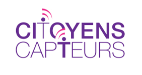
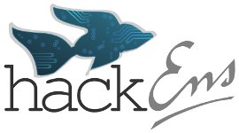
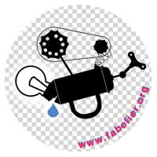

{*<!--CitizenAir is free software: you can redistribute it and/or modify
it under the terms of the GNU General Public License as published by
the Free Software Foundation, either version 3 of the License, or
(at your option) any later version.

CitizenAir is distributed in the hope that it will be useful,
but WITHOUT ANY WARRANTY; without even the implied warranty of
MERCHANTABILITY or FITNESS FOR A PARTICULAR PURPOSE.  See the
GNU General Public License for more details.

You should have received a copy of the GNU General Public License
along with CitizenAir.  If not, see <http://www.gnu.org/licenses/>.-->
*}
{include="header"}
<main>
    {if="isset($description)"}
        {$description}
    {else}
        <h2>CitizenAir</h2>
        <p>Le projet CitizenAir vise à mettre à la disposition des citoyens des outils de mesure précise de la qualité de l'air. Il propose en association avec des acteurs émanant des milieux scientifiques et techniques de forger des outils, des prototypes, des dispositifs de visualisation, des méthodologies visant à conférer une « capacité active » aux citoyens pour interpréter leur environnement, le capter et le mesurer et <em>in fine</em> agir sur lui. Voir <a href="http://www.citoyenscapteurs.net/">http://www.citoyenscapteurs.net/</a>.</p>

        <div class="info">
            <p>Ce projet est un <em>fully open source project</em>&nbsp;:</p>
            <ul>
                <li>Les sources de l'application se trouvent sur <a href="https://github.com/CitoyensCapteurs/CitizenAir">GitHub</a> sous licence <a href="https://www.gnu.org/copyleft/gpl.html">GNU GPL v3</a>.</li>
                <li>Les sources et tutoriaux de montage des capteurs disponibles sur <a href="http://wiki.citoyenscapteurs.net/">le wiki de l'association</a> sont placés sous licence <a href="http://www.ohwr.org/projects/cernohl/wiki">Open Hardware License du CERN</a>.</li>
                <li>Les données des capteurs téléchargeables au format <a href="https://fr.wikipedia.org/wiki/JSON">JSON</a> et <a href="https://fr.wikipedia.org/wiki/Comma-separated_values">CSV</a> sont sous licence <a href="http://opendatacommons.org/licenses/by/">Open Data Commons By</a>.</li>
            </ul>
        </div>

        <p class="center">  </p>


        <h2>L'association Labo Citoyen - Citoyens Capteurs</h2>
        <blockquote class="center">des technologies extraordinaires pour des gens ordinaires.</blockquote>
        <p>Réseau de savoirs et de compétences, l'association Citoyens Capteurs - Labo Citoyen s'inspire de la Science Citoyenne et vise à mettre en place des circuits courts, décentralisés, agiles et transparents d'innovation technologique pour outiller la citoyenneté, promouvoir l'intérêt général, contribuer à la préservation de l'environnement et produire un savoir local et participatif.</p>
        <p><a href="http://wiki.citoyenscapteurs.net/">http://wiki.citoyenscapteurs.net/</a> - <span class="contact_e-mail">@</span></p>
        <p class="center"><a href="http://citoyenscapteurs.net"></a></p>

        <h2>Les partenaires du projets</h2>
            <h3>hackEns</h3>
            <p>hackEns est un club d'élèves de l'<a href="http://www.ens.fr">École normale supérieure</a>. C'est un club de hacking au sens premier du terme : nous aimons bricoler, modifier, réparer et bidouiller tout ce que nous trouvons. Notre local, l'hack'ave est un petit hackerspace au sein de l'école qui met à disposition des élèves du matériel et des outils pour qu'ils puissent mener à bien tous leurs projets (électronique, programmation, bidouille, bricolage…).</p>

                <p>En pratique, nos activités sont très diverses et vont de la participation à la coupe de France de robotique, à la fabrication de boissons maisons (cola, bière) en passant par la conception d'un hexacoptère (drone à 6 hélices) imprimé à l'aide d'une RepRap.</p>

                <p>Plus d'infos sur notre site&nbsp;: <a href="http://hackens.org/">http://hackens.org/</a>.</p>
                <p class="center"><a href="http://hackens.org"></a></p>

            <h3>Fabelier - A *Lab to make things</h3>
                <p>Nous sommes un hackerspace basé à Paris, orienté sur le développement web et la bidouille électronique. La rencontre des deux mondes. Notre but&nbsp;: permettre à tout bricoleur, hacker ou curieux, de rendre concret son idée. Cela passe par la construction de plusieurs machines, dont les fameuses RepRap, mais aussi une graveuse de PCB et des murs plein d'outils. Ce lab, composé de membres aux compétences variées, est aussi un lieu d'entraide. Nous sommes hébergés et aidés par le Centre de Recherche Interdisciplinaire (CRI), dans le quartier du Marais, en plein centre de Paris.</p>
                <p>Vous pouvez venir nous voir tous les mercredis soir, sans prévenir. Plus d'infos sur notre site&nbsp;: <a href="http://fabelier.org/where/">fabelier.org/where</a></p>
                <p class="center"><a href="http://fabelier.org/"></a></p>

        <h2>Remerciements</h2>
            <p>Nous remercions tout particulièrement Eric Cherel, directeur de la DISI-Paris 5 et les organisateurs de la <a href="http://jnum.parisdescartes.fr/programme/">Journée Numérique 2014-Sorbonne Paris Cité</a>.</p>

            <p>Tous nos remerciements vont aussi à&nbsp;:</p>
            <ul>
                <li>Lucas Verney (<a href="https://github.com/Phyks">Phyks</a>) pour la visualisation et le <em>backoffice</em>.</li>
                <li>Élie Michel (<a href="https://github.com/eliemichel/">eliemichel</a>) pour le design de la deuxième version de l'interface.</li>
                <li>Pedro Terra Delboni, stagiaire Citoyens Capteurs pour le capteur.</li>
                <li>Kévin Lhoste et Alex Faraino pour leur aide et leurs conseils.</li>
            </ul>
    {/if}
</main>
{include="footer"}
